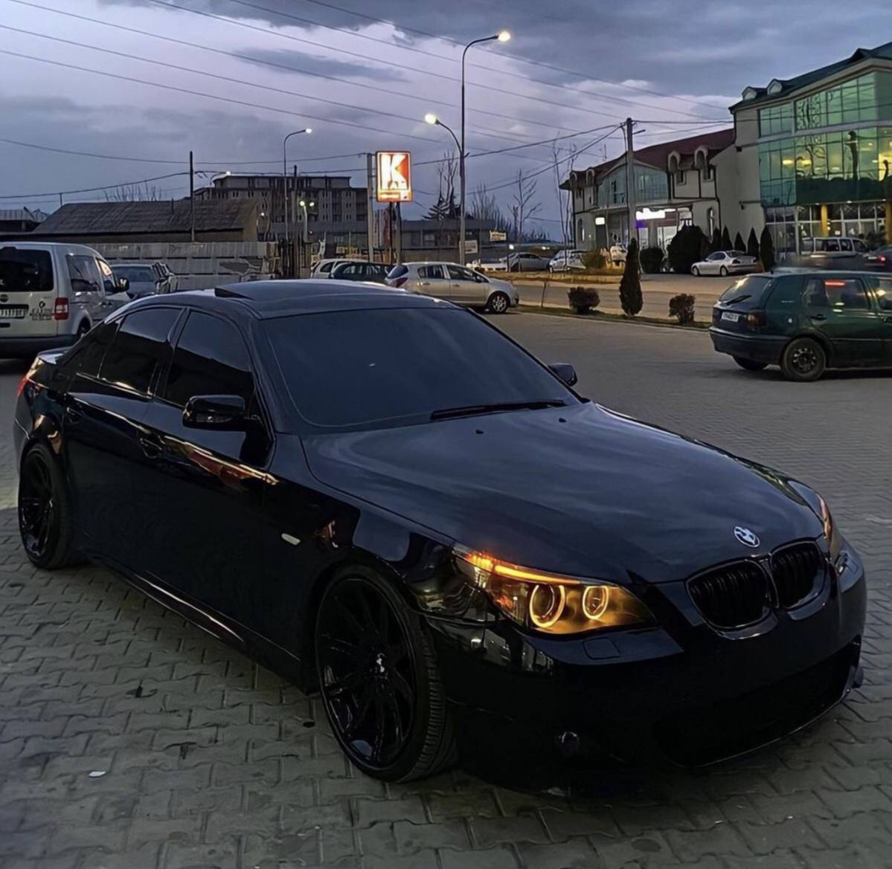
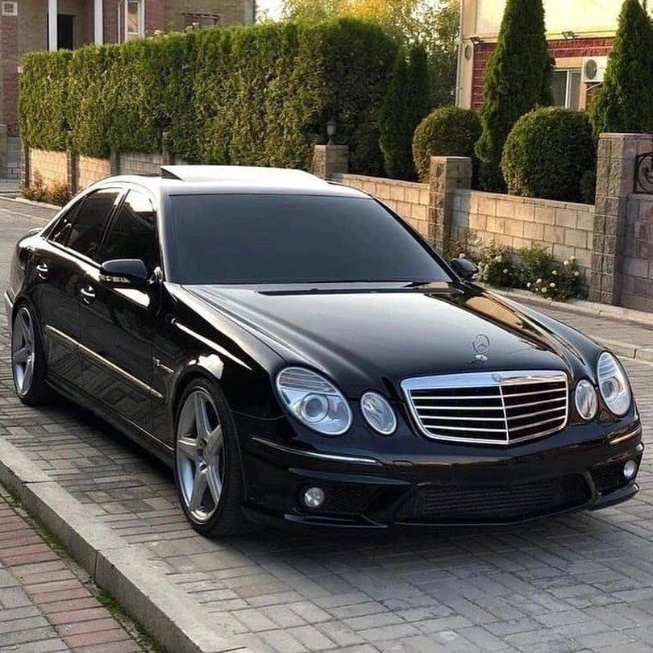

BMW E60 M5 (2008)
- Engine: 5.0L V10
- Horsepower: 507 HP
- Top Speed: 250 km/h (limited)
- Acceleration: 0-100 km/h in 4.7s
- Transmission: 7-speed SMG
Highlights:
The BMW E60 M5 broke the record for the most powerful naturally aspirated V10 engine in a sedan. Renowned for its handling and performance on tracks, it also featured an advanced SMG gearbox for its time.
Mercedes E-Class S600 (2008)
- Engine: 5.5L V12
- Horsepower: 510 HP
- Top Speed: 250 km/h (limited)
- Acceleration: 0-100 km/h in 4.6s
- Transmission: 7-speed automatic
Highlights:
The Mercedes S600 was celebrated for its luxurious ride and unmatched interior quality. It offered a class-leading V12 engine and top-tier technology, redefining comfort and performance in luxury sedans.
BMW vs Mercedes-Benz: A Rivalry of Luxury and Performance
BMW and Mercedes-Benz are among the most competitive luxury automotive brands in the world. Their rivalry is not just about sales but also about innovation and offering cutting-edge designs that captivate consumers.
BMW: Known for its slogan "The Ultimate Driving Machine," BMW focuses on delivering a sporty experience with high-performance engines and dynamic handling.
Mercedes-Benz: Renowned for its luxurious offerings, technological innovations, and comfort, with a long-standing legacy of satisfying the most demanding customers.
In 2008, this rivalry reached a peak with the release of two exceptional models: the BMW E60 M5 and the Mercedes-Benz E-Class S600. These models represent the distinct philosophies of each brand and deliver extraordinary driving experiences.
| Feature | BMW E60 M5 | Mercedes E-Class S600 |
|---|---|---|
| Engine | 5.0L V10 | 5.5L V12 |
| Horsepower | 507 HP | 510 HP |
| Top Speed | 250 km/h (limited) | 250 km/h (limited) |
| Acceleration (0-100 km/h) | 4.7 seconds | 4.6 seconds |
| Transmission | 7-speed SMG | 7-speed automatic |
Which is Better? The BMW E60 M5 is ideal for driving enthusiasts seeking a thrilling and performance-oriented experience. The Mercedes-Benz S600 offers a luxurious option that combines power and comfort, making it perfect for drivers who prioritize refinement and smoothness.
Ultimately, the choice between these two models depends on the buyer's preferences. BMW focuses on excitement and driving pleasure, while Mercedes-Benz delivers a more luxurious and tranquil experience.